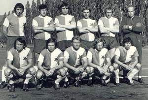

Ze Sokola Jiskra, z Jiskry zpátky Český Lev, přátelský zápas proti Slavii v roce 1974, postup do krajského přeboru v roce 1978 a slavnostní otevření travnaté plochy 27. dubna 1986.
Obnovení klubu po válce
Bezprostředně po skončení druhé světové války se začali bývalí členové Českého Lva scházet a plánovat obnovení klubu. Situace byla složitá — mnoho předválečných členů se do Neštěmic nevrátilo, a naopak do obce přicházeli noví osadníci z vnitrozemí Čech, kteří s místním klubem neměli žádné vazby. Přesto se v roce 1946 podařilo obnovit činnost a klub se znovu přihlásil do regionálních soutěží.
V politickém kontextu let 1948–1953 však byla tradiční podoba klubu změněna. V rámci centralizace tělovýchovy byl klub v roce 1953 přejmenován na Sokol Jiskra Neštěmice. Bylo to v rámci celostátní reformy tělovýchovy, kdy všechny sportovní kluby byly podřízeny státní kontrole. Ztráta historického jména byla pro mnoho starých členů velmi bolestivá, ale v daných politických podmínkách neměli na výběr.
Jiskra v padesátých a šedesátých letech
Období Sokola Jiskry bylo pro klub obdobím stability, ale také určité stagnace. Klub fungoval jako běžný amatérský klub v okresních soutěžích. Nechyběly mu úspěchy, několikrát se prosadil v okresním přeboru a měl silné mládežnické oddíly, ale na vrcholovou úroveň se nedostal. Členská základna se pohybovala kolem 80 až 120 aktivních členů.
V šedesátých letech se klub pokoušel o modernizaci zázemí. Bylo postaveno nové vybavení, klubovna byla zrekonstruována a v roce 1965 byly zakoupeny nové dresy a výstroj pro všechny hráčské kategorie. Klub se stal opět důležitou součástí společenského života v Neštěmicích a jeho zápasy byly navštěvovány stovkami diváků. V té době se klub také začal podílet na organizaci sportovních akcí pro mládež a pořádal pravidelné letní fotbalové kempy.
Zpět k názvu Český Lev
V roce 1968, v období politického uvolnění, se klub pokusil navrátit ke svému historickému názvu Český Lev. Tento záměr byl však kvůli invazi vojsk Varšavské smlouvy v srpnu 1968 a následné normalizaci odložen. Až v roce 1991, po pádu komunistického režimu, se klub oficiálně navrátil ke svému původnímu názvu. Klub se tak po téměř čtyřiceti letech stal opět Českým Lvem Neštěmice, což mělo pro mnoho starých členů velký emocionální význam.
Slavný přátelák proti Slavii (1974)


Jedním z nejslavnějších momentů novodobé historie klubu byl přátelský zápas proti pražské Slavii v roce 1974. Zápas se uskutečnil 15. června 1974 a byl pořádán u příležitosti oslav výročí klubu. Slavia, tehdy jeden z nejlepších klubů v Československu, přijela s kompletním A-týmem, ve kterém hráli i reprezentanti.
Zápas sledovalo přes 3 000 diváků, což bylo na neštěmické poměry neuvěřitelné číslo. Hřiště bylo přeplněné, lidé stáli i na přilehlých svazích. Jiskra prohrála 1:7, ale to nikomu nevadilo. Hráči místního klubu dostali možnost zahrát si proti skutečným hvězdám fotbalu a pro mnohé to byl zážitek na celý život. Před zápasem a po něm se konalo velké společenské setkání, kterého se zúčastnili představitelé města a okresu. Tento zápas se stal legendou klubu a dodnes o něm vypráví pamětníci.
Postup do krajského přeboru (1978)
V sezóně 1977/1978 se klub po několikaletém snažení konečně probojoval do krajského přeboru. Bylo to po obrovském výkonu celého týmu pod vedením trenéra Josefa Nováka, který klub vedl od roku 1975. Klub vyhrál okresní přebor s velkým náskokem, a v kvalifikačních zápasech o postup se prosadil proti soupeřům z Děčína a Teplic.
Postup do krajského přeboru byl pro klub historickým úspěchem. Byl to nejvyšší stupeň, kterého se klub kdy probojoval v poválečné éře. Klub v krajském přeboru strávil několik sezón s proměnlivými výsledky. V prvních sezónách se držel v horní polovině tabulky, ale postupem času se situace zhoršovala kvůli ztrátě klíčových hráčů, kteří odcházeli do vyšších soutěží. V roce 1983 klub z krajského přeboru sestoupil zpět do okresního přeboru.
Otevření travnaté plochy (1986)
Dne 27. dubna 1986 byla v Neštěmicích slavnostně otevřena nová travnatá plocha. Bylo to po letech snažení a budování vedení klubu ve spolupráci s městským úřadem. Stará hřiště se škvárovým povrchem byla nepraktická a moderní travnatá plocha představovala skutečný skok vpřed. Stavba trvala téměř dva roky a byla financována z městských prostředků a darů místních podniků, zejména Tonasa.
Slavnostního otevření se zúčastnili představitelé města, okresu a samozřejmě také hráči, funkcionáři a příznivci klubu. Na zahájení se konal přátelský zápas proti TJ Spartak Ústí, který skončil nerozhodně 2:2. Po zápase byl uspořádán slavnostní večer v klubovně, kde se připomínaly úspěchy klubu a plánovalo další směrování. Otevření travnaté plochy znamenalo začátek nové éry — klub měl konečně moderní zázemí, které mu umožňovalo se dále rozvíjet.
Osmdesátá a devadesátá léta
Druhá polovina osmdesátých let byla ve znamení stabilizace klubu v okresním přeboru. Klub se pravidelně pohyboval v horní polovině tabulky, nikdy se však nepodařilo vrátit do krajského přeboru. Po roce 1989 nastala nová éra — politické změny přinesly také změny v organizaci sportu. Klub se osamostatnil, získal nové stanovy a v roce 1991 se oficiálně navrátil k původnímu názvu Český Lev Neštěmice.
Devadesátá léta byla ve znamení velkých společenských proměn. Klub čelil mnoha výzvám — ztrátě tradičních sponzorů, nutnosti hledat nové zdroje financování a také konkurenci nových sportovních aktivit. Přesto se klub udržel a dokonce se mu podařilo obnovit silné mládežnické oddíly. Na konci devadesátých let měl klub kolem 150 aktivních členů ve všech hráčských kategoriích.
Na prahu nového tisíciletí
V roce 2001, kdy vznikají tyto stránky, oslavuje Český Lev Neštěmice 83 let od svého založení. Klub si prošel mnoha proměnami — dvěma světovými válkami, změnami politických režimů, přejmenováními a obnovami. Přesto se mu podařilo zachovat sportovní tradici, která začala v místnosti pana Rolleho v listopadu 1918. Klub v současné době hraje v okresním přeboru Ústeckého okresu a má ambice se opět probojovat do vyšších soutěží.
Členové klubu si vážně uvědomují historickou hodnotu klubu a snaží se zachovat jeho tradice. Každoročně se pořádají oslavy výročí založení, publikují se sborníky vzpomínek pamětníků a klub aktivně spolupracuje s místními školami na podpoře dětského sportu. Věříme, že Český Lev Neštěmice bude pokračovat ve své sportovní činnosti i v příštích desetiletích a zůstane i nadále neodmyslitelnou součástí života Neštěmic.